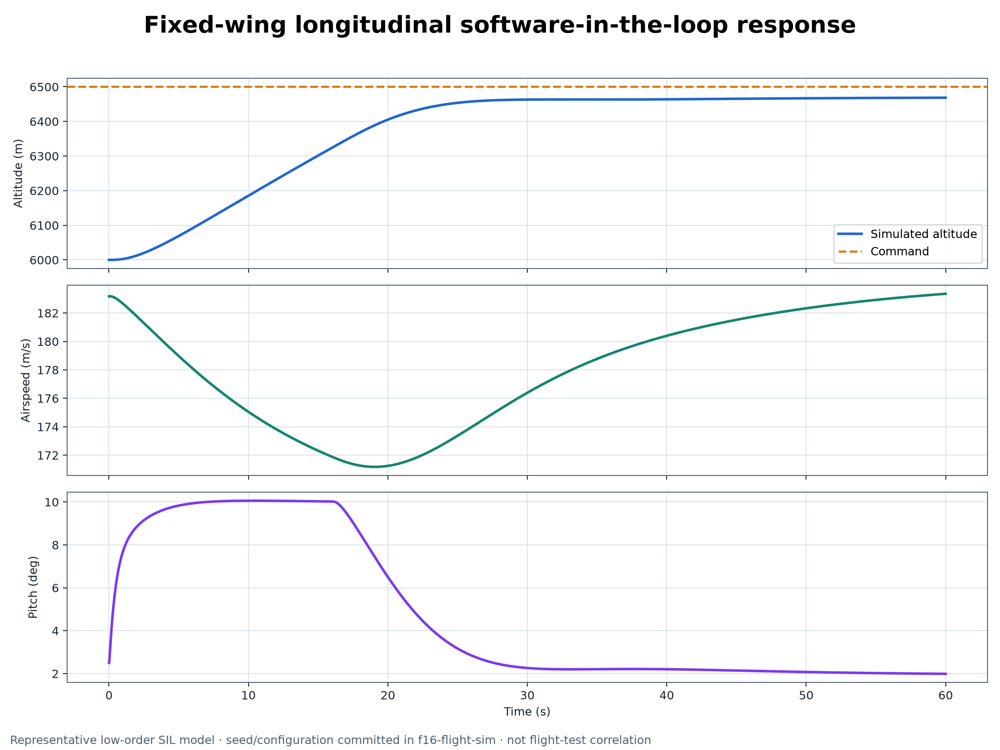

Home / Projects / Fixed-Wing Flight Controls
Fixed-Wing Flight Controls SIL
FLIGHT DYNAMICS · AUTOPILOT · ACTUATORS · SENSORS · SEEDED MONTE CARLO
This low-order fixed-wing SIL model evaluates autopilot response with actuator limits, deterministic sensor errors, gusts, coupled dynamics and a repeatable uncertainty campaign.

01Verified baseline
All figures below are tied to the committed default configuration and seed 42. They demonstrate deterministic software behavior for the declared equations and controls; they are not comparisons with flight-test data.
Fly the loop and disperse it
Move the gains, add gust, and run the dispersion campaign. The sign-convention switch reproduces the defect class the verification pass caught, so you can see what a wrong Cm_de sign does to the response.
This model needs JavaScript. Everything it demonstrates is described in the sections below.
02Simulation evidence
The plots are rendered from the committed verification configuration. Open either image to inspect the labels and traces at full resolution.
Longitudinal command response
The bounded pitch command drives altitude toward 6,500 m while proportional speed hold recovers the airspeed transient. The final altitude error is -31.476 m; this is regression evidence, not an aircraft-performance claim.

50-run dispersion campaign
All 50 runs remain finite under the declared mass, inertia, aerodynamic and gust dispersions. Mean final altitude error is -30.794 m; the final-error 5th–95th percentile range is -40.397 to -16.753 m.
03What the verification pass changed
The evidence run found and corrected three material implementation problems. The pitch controller signs were opposite the declared Cm_de < 0 convention; the body-axis q*u term had the wrong sign in two models; and sensor noise advanced a stateful random generator inside an adaptive ODE callback.
The corrected baseline adds a bounded pitch command, elevator trim, proportional speed hold, stiff actuator integration and pre-generated sensor noise interpolated on the declared output grid.
| Check | Result | Evidence meaning |
|---|---|---|
| Longitudinal model | 60 s PASS | Finite, repeatable default scenario |
| Coupled model | 80 s PASS | Finite coupled response |
| Monte Carlo | 50 / 50 finite | Seeded software dispersion campaign |
| Actuators | PASS | Bounded first-order surface behavior |
| Sensors | PASS | Deterministic seeded-error behavior |
04Controls and simulation architecture
| Layer | Implemented behavior |
|---|---|
| Aircraft plant | Longitudinal and coupled rigid-body models with low-order lift, drag and moment approximations |
| Guidance / control | Altitude-to-pitch, roll, yaw damping and proportional speed-hold loops |
| Actuation | Bounded first-order elevator, aileron and rudder dynamics |
| Sensing | Deterministic seeded gyro and altitude error injection |
| Disturbance | Sinusoidal gust inputs and declared uncertainty dispersions |
| Evidence | Scenario checks, actuator and sensor regressions, plots and machine-readable summary |
The controller-to-plant path is deliberately inspectable: command → controller → actuator → aircraft state → sensor model → regression metrics.
05Evidence provenance and reproduction
The portfolio figures were generated from repository commit f382713. The machine-readable summary is the source of exact displayed values.
python -m pip install -e .
python tests/regression_checks.py
python tests/sensor_regression_checks.py
python tools/generate_verification_evidence.py --checkReview verification_summary.json for exact values and VERIFICATION_REPORT.md for scope and limitations.
06Claim boundary
- Deterministic default scenarios
- Declared controller and actuator behavior
- Repeatable seeded sensor errors
- 50-run uncertainty execution
- Automated regression evidence
- Validated F-16 aerodynamics
- Correlation with wind-tunnel or flight-test data
- Gain scheduling or envelope protection
- Hardware-in-the-loop or real-time execution
- Flight readiness or aircraft performance
The aerodynamic model is low-order and constant-coefficient, with small-angle approximations in the coupled formulation. “F-16-inspired” describes the educational configuration; it is not a fidelity or validation claim.